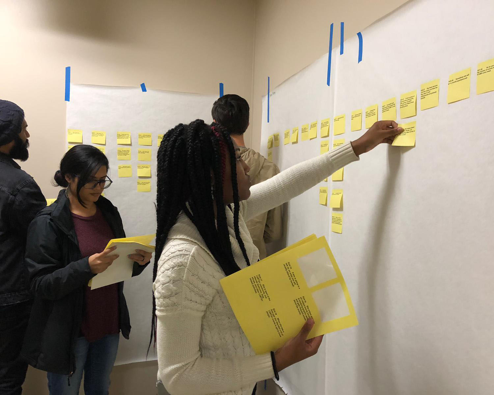
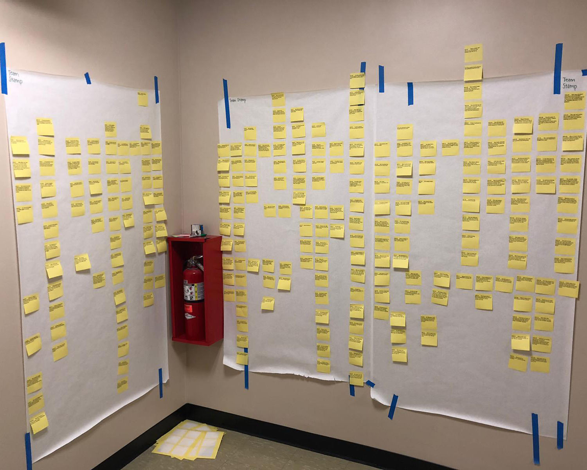
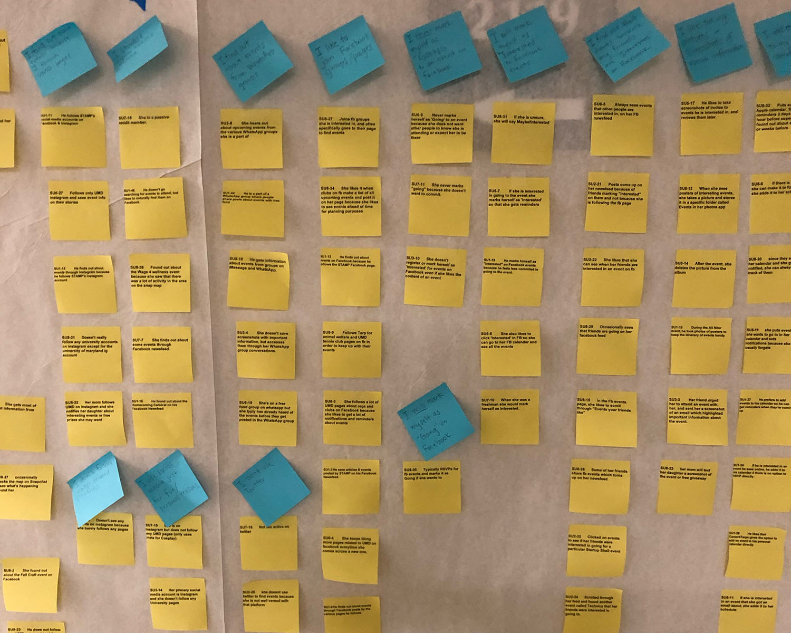
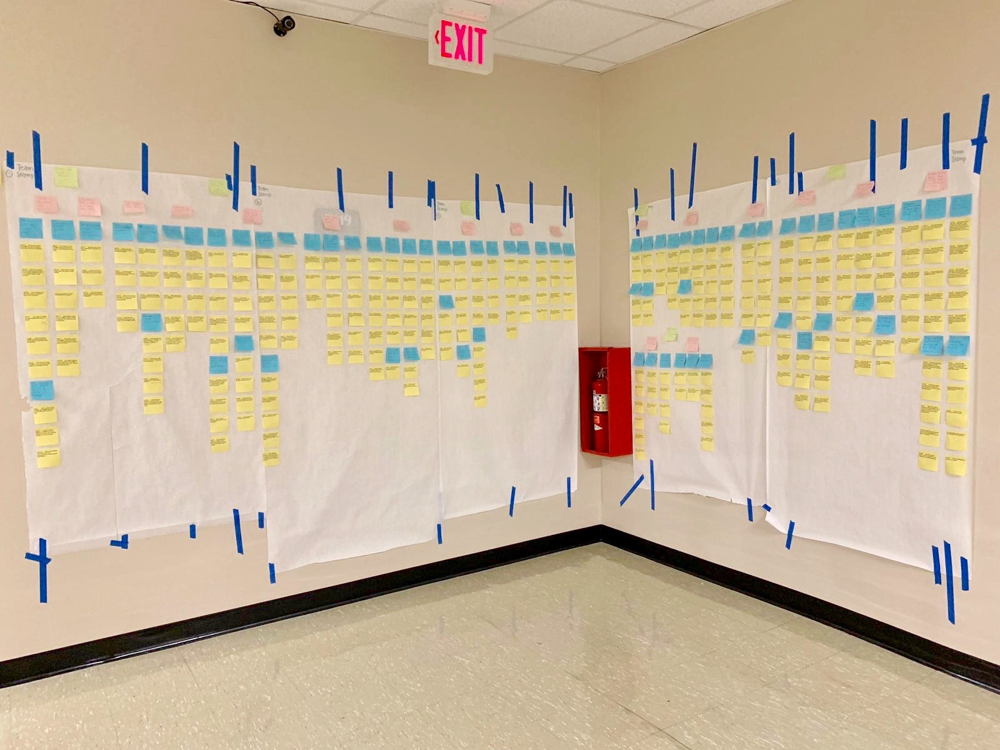
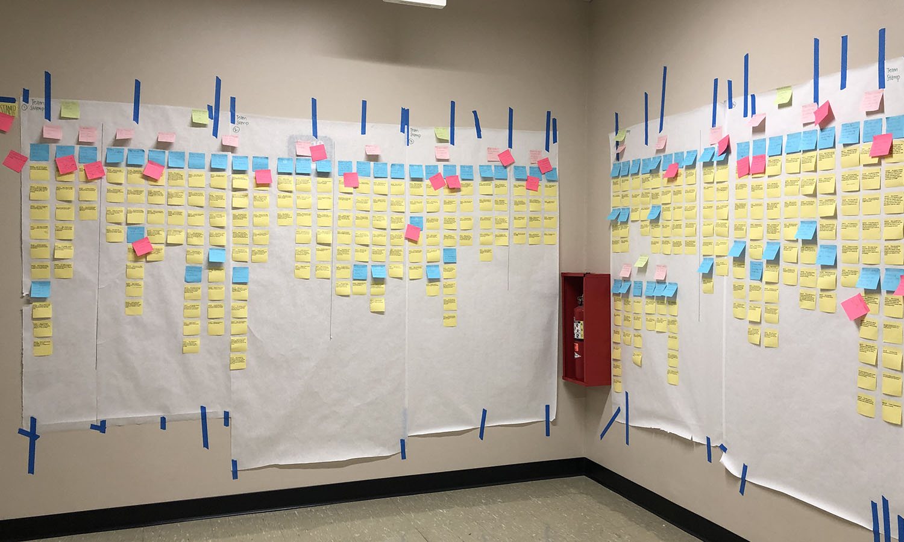
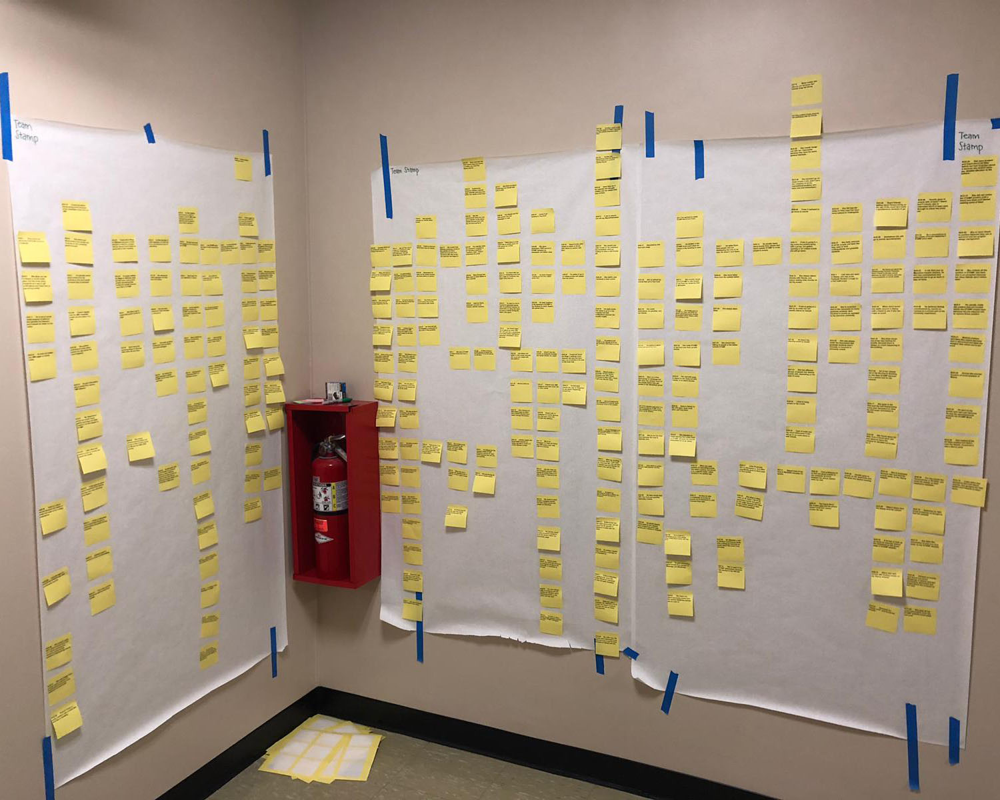
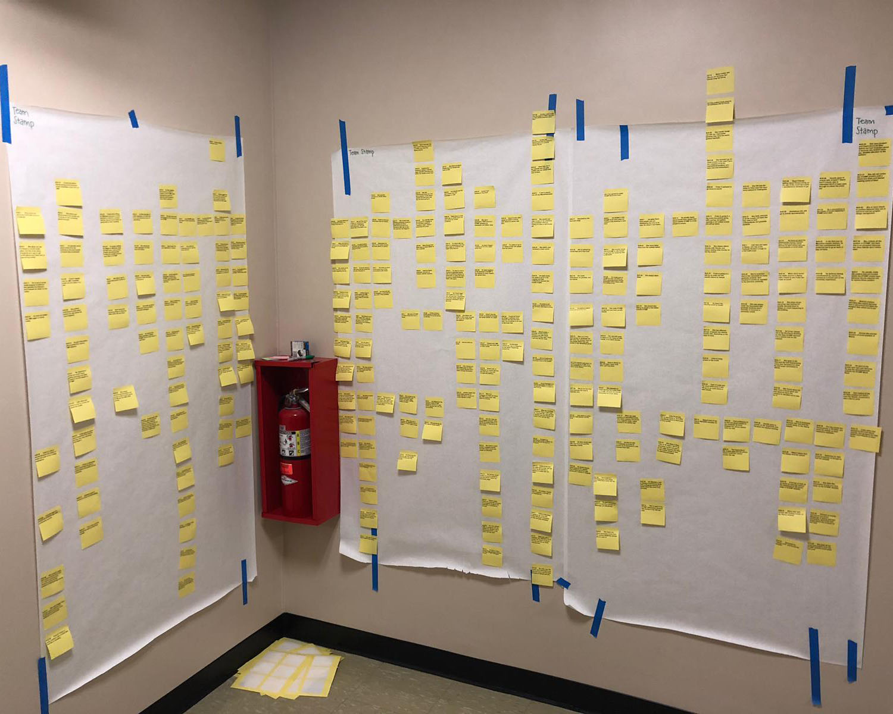

Eva Quintos Tennant, Assistant Director of Marketing and Communications at STAMP
Timeline
8 Weeks
Role
Researcher and Concept Designer
Tools
Pen & paper, InDesign, Contextual Inquiry
Background
The Adele H. Stamp Student Union (STAMP) is the student activity
center at the University of Maryland. It aims to nurture a welcoming
and inclusive community through events, resources, and
intentional programming. With over 3,000 events happening in and
around the building each year, it is nearly impossible to keep students
in the loop. Conversely, students have a hard time finding events that
interest them.
The Design Problem
The university is home to 40,000+ students who have
a wide range of interests, habits, and social media preferences. It has become
increasingly difficult for the marketing and communications department to effectively
communicate and engage with the student body.
Despite having a dedicated website, STAMP departments use various channels of
communication (social media, email newsletters, etc.) but none to their full potential.
Project Inspiration
As students of the University of Maryland, our research team frequents STAMP throughout
the week, and we still felt like we were unprepared and unaware of the events happening around us.
Through talking with fellow students, we discovered that the website was difficult to navigate,
and did not intuitively present relevant information about upcoming events.
Subsequently, we offered our services to the STAMP Marketing department in finding ways to improve
their channels of communication. A semester-long user research project was conducted to understand
how students discover & track events that take place at the University, specifically focusing on those
that take place in STAMP.
The Process
Pre-Research
Develop initial project assumptions
Meet with client
Refine project focus
Research
Conducted contextual inquiries
Interpretation Sessions
Build various models (i.e. affinity diagram, day in the life, sequence)
Design
Visioning
Product Concepts
Final client presentation
Pre-Research
Initial Assumptions
Based off of our initial contact with other students and our personal experiences,
we thought it best to focus our efforts on the problems with the STAMP website.
Client Meeting
We presented our problem statement and initial assumptions to the client. During this
interview, we learned that the initial scope of our project was too narrow.
While the website is a resource some students use, the vast majority find out about
events through alternative channels. We were asked to discover which channels were most effective, and where there was room for improvement in the marketing team's strategies.
Project Focus
Evaluate the existing pain points of the STAMP
event discovery experience and identify additional breakdowns
Meet with students to learn more about
the channels they actually use to find events
Identify the most effective communication
channels for STAMP to pursue in the future
Pre-Research
Contextual Inquiry Through the contextual design process, we aimed to discover new
insights into the way students find events and propose the best
ways for the marketing team to reach their audience.
Since our goal was to improve the experience of students
across campus, we decided to interview students that represented the
following groups:
Underclassmen
Upperclassmen
Graduate Students
On-Campus (1/2mi radius)
Off-Campus
International
Domestic
During our interviews we primarily focused on gathering data about the following:
How do students learn about upcoming events?
What social media channels do they interact with?
What do students typically go to STAMP for?
Do they attend events alone or with others?
What type of events do they attend?
Where do they keep track of information about
upcoming events they are interested in?
Observe how students use their choice of social
media for event finding
Observe how students navigate the STAMP website
to find an event
Data Interpretation Twenty-four to forty-eight hours after each contextual inquiry interview was conducted,
an interpretation session was conducted. The purpose of the sessions was to share and analyze
the insights gathered during each interview across the team. This ensured common knowledge
throughout the team, allowed anyone to raise any questions or concerns, and enabled us to
continue working toward the common goal.
Affinity Diagram
After the conclusion of eight interviews and interpretation sessions, we started
the process of building the affinity diagram. Its purpose was to show the scope of
the problem and reveal the user’s pain points in one visual diagram.
The first step was to take our notes from the interviews and place
them on the wall, placing notes with similar ideas in the same column.


After we broke the original groupings down to smaller groups of the closest
related notes, our next step was to create blue notes that captured the theme
of the yellow notes.

Next, we created pink notes that described the big picture that a
group of blue notes below was about.
When we felt confident that our pink notes described the themes well, we
moved on to creating green notes that grouped the sections under the pink
note and gave us overarching themes and ultimately told a story about our
users and their various experiences.

Day in the life model
During each interpretation session we created separate models for each interviewee
and then consolidated them. The purpose of creating a day in the life model was to
graphically show how users accomplish the task of finding certain events. We wanted to
understand how the users navigate their world, what they do in different places, what
devices they use to get things done, and how they access the content they need.
Sequence Model
During each interpretation session, sequence models were built to capture the triggers,
intents, and steps of each user's event finding process through the various channels they use.
These diagrams helped define the scenarios of use that our product design must support and
identify lower-level usability issues.
The individual models were consolidated into one sequence model to drive detailed design.
Design
Visioning
To kick-off the visioning process, our team did a wall walk of our affinity diagram
to provide us with the opportunity to review the story that was crafted from the interview
data. It gave us a chance to see the whole scope of the data and consider the best way to
respond with coherent design solutions.
Each person silently reviewed the data and wrote design ideas on hot pink sticky notes along the way.

Next, we created a list of all of our ideas and divided them into
two sections – issues and hot ideas. Then we chose five ideas from
the list that we decided should be our main focus and turned them
into design concepts during our visioning session. These concepts were:
Facebook Ads
Food Court Banners
Personalized Newsletters
Add to Calendar
Poster QR Codes
Product Concepts Facebook Ads
Throughout all the interviews, Facebook was a common social media platform used by
students to find and track their events. Due to the fact that it is such a highly
used application and an integral part of many users lives, we believed that
targeted facebook ads will allow the STAMP marketing team to reach a broader
audience. This is a relatively low cost feature on Facebook, which would
allow the team to send out event promo to target user groups.
Poster QR Codes
STAMP's major form of advertisement are their numerous posters that are
seen around the building as well as throughout campus. Many users indicated
that they are engaged by the posters and rely on them to find out about events.
Students tend to take photos of the posters to save the information and/or to
look up the details later. We decided to capitalize on that aspect by suggesting
the addition of QR codes to the posters that connect to the event's Facebook page.
This allows for quick and easy access to events as well as the means to interact
with the event on the largely used social media form.
Foodcourt Banners
STAMP is the central hub for many students and one of the main reasons students
enter the building is to go to the food court. Various users noted that while in
the building they see many advertisements and take note of various events occurring.
Currently there is little to no advertising in the food court and believe that by adding
large banners in the main seating area of the food court we can attract more attention
to upcoming events.
Personalized Newsletters
We found that a lot of students use email as a way to receive event information
from various organizations. However, emails are not currently personalized, and
a lot of students get bombarded with mail that is irrelevant to them. In an effort
to save their inboxes and help STAMP target specific groups, we proposed an opt
out system where students have the ability to select the topics they are interested
in and simply receive event emails on those topics.
Add to Calendar
Many users indicated that an add to calendar button was helpful on other
sites and wished they had that ability on the STAMP calendar site. Although
this option is available it is difficult to find. We wanted to make it more
accessible to the user directly on the events and programs page. Once the user
clicks the button an .ics file is downloaded and the event is added to their
personal calendar.
Final Client Meeting
Our final step in the user research process was to report our
findings and product concepts to our client. We conducted a board
room presentation with Eva Quintos Tennant, the Assistant Director
of Marketing and Communications, as well as the Graphic Design and
Marketing Coordinators of STAMP.

 



 Throughout all the interviews, Facebook was a common social media platform used by
students to find and track their events. Due to the fact that it is such a highly
used application and an integral part of many users lives, we believed that
targeted facebook ads will allow the STAMP marketing team to reach a broader
audience. This is a relatively low cost feature on Facebook, which would
allow the team to send out event promo to target user groups.
Throughout all the interviews, Facebook was a common social media platform used by
students to find and track their events. Due to the fact that it is such a highly
used application and an integral part of many users lives, we believed that
targeted facebook ads will allow the STAMP marketing team to reach a broader
audience. This is a relatively low cost feature on Facebook, which would
allow the team to send out event promo to target user groups.